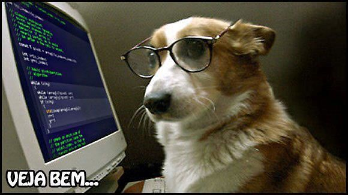

🐾 Bob procura um lar! 💻❤️
Bob tem 4 anos e é um cachorrinho muito inteligente — até parece que entende de computadores! 😄 Calmo,
carinhoso e curioso, ele adora estar por perto e observar tudo com atenção.
Já está vacinado, castrado e pronto para encontrar uma família que valorize seu jeitinho sábio e doc